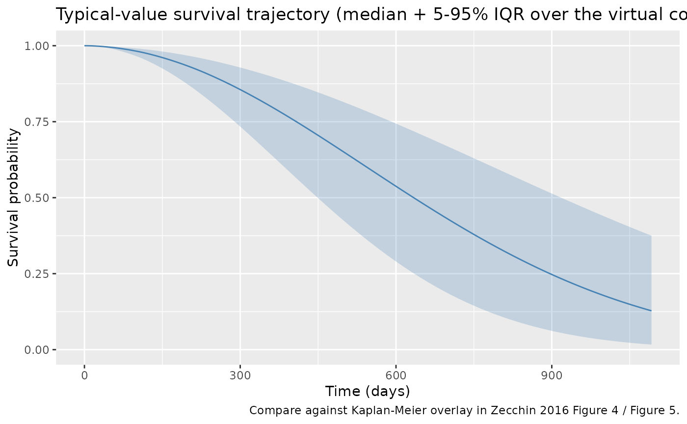
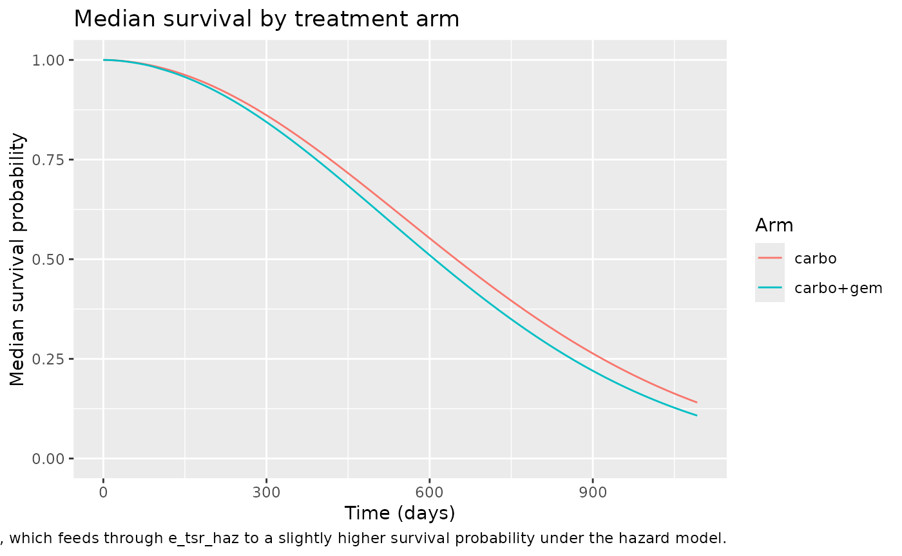
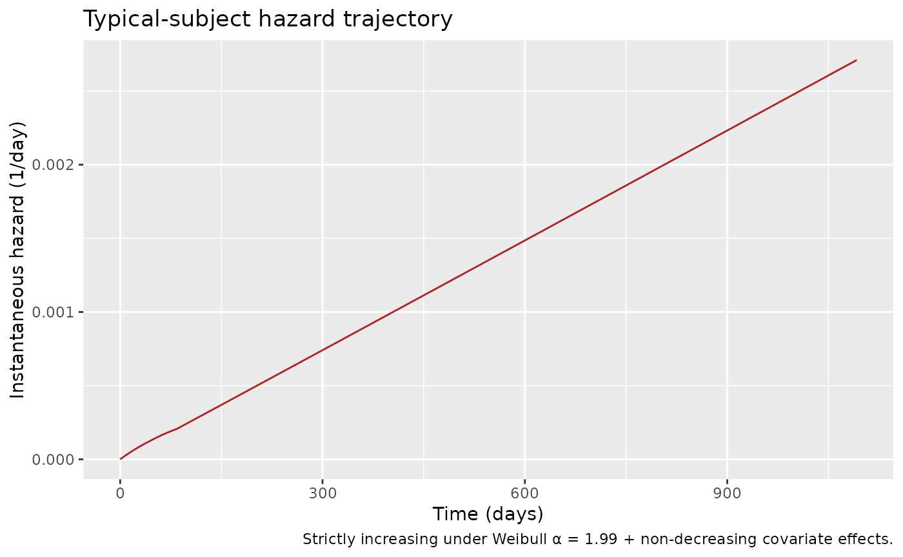
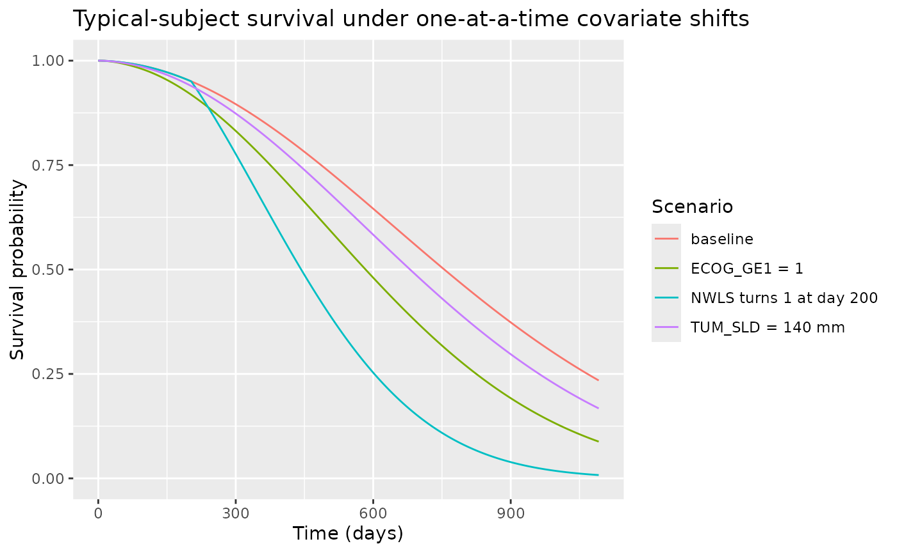
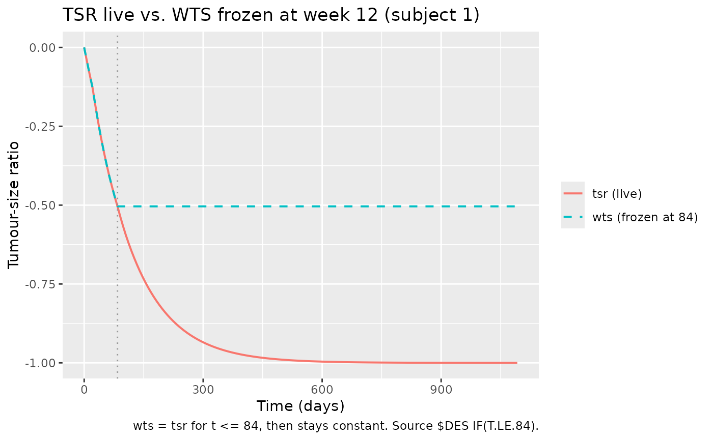

Zecchin_2016_survival
Source:vignettes/articles/Zecchin_2016_survival.Rmd
Zecchin_2016_survival.RmdModel and source
- Citation: Zecchin C, Gueorguieva I, Enas NH, Friberg LE. Models for change in tumour size, appearance of new lesions and survival probability in patients with advanced epithelial ovarian cancer. Br J Clin Pharmacol. 2016;82(3):717-727. doi:10.1111/bcp.12994. DDMORE Foundation Model Repository: DDMODEL00000218. Subject-specific tumour-dynamics covariates (KG, KD0, KD1, IBASE) are empirical-Bayes outputs from the upstream SLD model (DDMODEL00000217; see modellib(‘Zecchin_2016_tumorovarian’)).
- Description: Time-to-event model for overall survival (OS) in advanced epithelial ovarian cancer (Zecchin 2016 / DDMODEL00000218): Weibull baseline hazard with covariate effects of normalised baseline SLD (TUM_SLD / 70 mm), tumour-size-ratio TSR(t) capped at week 12, time-varying new-lesion indicator (NWLS), and binary ECOG performance status, with the underlying SLD trajectory (subject-specific tumour-growth and drug-cytotoxicity rate constants from the upstream Zecchin 2016 SLD model) integrated inline.
- Article: https://doi.org/10.1111/bcp.12994
- DDMORE Foundation Model Repository entry: DDMODEL00000218
- Source bundle (local mirror):
dpastoor/ddmore_scraping/218/
This vignette validates the Zecchin 2016 overall-survival (OS) model
packaged under inst/modeldb/ddmore/Zecchin_2016_survival.R.
The model is a time-to-event Weibull-baseline-hazard model linked to an
inline tumour-size (SLD) ODE; subject-specific tumour-growth and
drug-cytotoxicity rate constants (KG, KD0,
KD1, IBASE) are empirical-Bayes posteriors
carried in via the dataset from the upstream Zecchin 2016 SLD model
(Zecchin_2016_tumorovarian / DDMODEL00000217).
The DDMORE bundle ships only an OS-fit listing; the linked publication (Zecchin 2016 BJCP 82(3):717-727; PMID 27136318; PMC5338128) reports the final estimates in Table 2 of the paper. The publication PDF was not on disk for this extraction; Methods / Table 2 cross-checks were performed via PMC HTML.
Population
Zecchin 2016 (Br J Clin Pharmacol 82(3):717-727) modelled overall
survival in N = 336 women with advanced (FIGO stage
III/IV) epithelial ovarian cancer enrolled in a randomised Phase III
chemotherapy trial. Treatment arms were carboplatin monotherapy (target
AUC 5.0 mg·min/mL Q3W) or carboplatin (target AUC 4.0 mg·min/mL Q3W)
plus gemcitabine. The cohort had a median age of about 59 years;
baseline ECOG performance-status distribution was concentrated at 0 and
1 (the paper dichotomises ECOG to 0 vs ≥1 because of the small number of
patients with ECOG > 1 at enrolment); median baseline sum of longest
diameters (SLD) was about 70 mm (the paper’s reference value
TVSLD0).
The same information is available programmatically:
m <- readModelDb("Zecchin_2016_survival")()
str(m$meta$population, max.level = 1)
#> List of 8
#> $ n_subjects : int 336
#> $ n_studies : int 1
#> $ age_range : chr "median ~59 years (advanced epithelial ovarian cancer cohort; Zecchin 2016 Table S2 / paper text)"
#> $ weight_range : chr "not transcribed in this extraction (Zecchin 2016 Table S2 captures the demographic distributions; the WebFetch "| __truncated__
#> $ sex_female_pct: num 100
#> $ disease_state : chr "advanced (FIGO stage III/IV) epithelial ovarian cancer (recurrent / platinum-sensitive cohort, randomised Phase"| __truncated__
#> $ dose_range : chr "Phase III chemotherapy: carboplatin monotherapy (target AUC 5.0 mg*min/mL Q3W) or carboplatin (target AUC 4.0 m"| __truncated__
#> $ notes : chr "336 patients pooled from a randomised Phase III trial in advanced epithelial ovarian cancer (Zecchin 2016, BJCP"| __truncated__Source trace
Per-parameter origin is captured as in-file comments next to each
ini() entry in
inst/modeldb/ddmore/Zecchin_2016_survival.R. The table
below collects them in one place.
| Equation / parameter | Value | Source location |
|---|---|---|
Weibull baseline hazard h(t)
|
n/a | Executable_OS.mod $DES
(DADT(2) = LAM*SHP*(LAM*(T+DEL))**(SHP-1)*EXP(...)) ↔︎
Zecchin 2016 Equation 7 |
SLD ODE d/dt(tumorSize)
|
n/a | Executable_OS.mod $DES DADT(1) ↔︎ same equation in
Zecchin 2016 SLD model (Eq. 1-3 of the paper / DDMODEL00000217) |
| TSR(t) clamp at week 12 | n/a | Executable_OS.mod $DES
IF(T.LE.84) WTS = TSR ELSE WTS = WTS
|
lam_haz (Weibull scale, 1/day) |
exp-1 = 0.001183 (1/d) | Output_real_OS.lst FINAL TH1 = 1.18E-03; Zecchin 2016 Table 2 λ_OS = 0.036 (1/month) = 0.001183 (1/day) |
alfa_haz (Weibull shape) |
exp-1 = 2.004 | Output_real_OS.lst FINAL TH2 = 2.00E+00; Table 2 α_OS = 1.99 |
e_sld0_haz (γ on SLD₀/70) |
0.2084 | Output_real_OS.lst FINAL TH3 = 2.08E-01; Table 2 γ_SLD0 = 0.189 (small rounding) |
e_tsr_haz (γ on TSR(t)) |
0.9036 | Output_real_OS.lst FINAL TH4 = 9.04E-01; Table 2 γ_TSR(t) = 0.893 |
e_nwls_haz (γ on NWLS) |
1.230 | Output_real_OS.lst FINAL TH5 = 1.23E+00; Table 2 γ_NewLes(t) = 1.23 |
e_ecog_haz (γ on ECOG_GE1) |
0.5162 | Output_real_OS.lst FINAL TH6 = 5.16E-01; Table 2 γ_ECOG = 0.518 |
η on LAM (OMEGA(1,1)) |
0 FIXED | Output_real_OS.lst FINAL OMEGA(1,1) = 0.00E+00 (placeholder; no estimated IIV) |
Virtual cohort
The bundle’s simulated dataset lives outside this package
(dpastoor/ddmore_scraping/218/Simulated_OS.csv); the
vignette builds a small virtual cohort programmatically, drawing the
upstream IPP covariates (KG, KD0,
KD1, IBASE) from log-normal distributions
centred at the Zecchin 2016 SLD model’s typical values
(modellib('Zecchin_2016_tumorovarian')) and the OMEGA
variances reported in Output_real_SLD.lst. Treatment cycles
are encoded as time-varying records updating AUC_CARBO and
AUC_GEM at the start of each Q3W (21-day) cycle.
set.seed(20260506)
# Per-cycle Q3W carboplatin AUC (six cycles, day 0, 21, 42, 63, 84, 105)
cycle_starts <- c(0, 21, 42, 63, 84, 105)
# The bundle's subject 1 carboplatin per-cycle AUCs (used as the median
# value here; they are time-varying because actual administered AUCs
# fluctuate around the protocol target). Real bundle values are available
# in dpastoor/ddmore_scraping/218/Simulated_OS.csv (column AUC0).
median_auc_carbo <- 110
# Two treatment arms: carboplatin monotherapy and carboplatin + gemcitabine
arms <- c("carbo", "carbo+gem")
make_subject <- function(id, arm) {
# Empirical-Bayes draw mimicking the upstream SLD model's posterior
KG <- exp(log(0.611) + rnorm(1, 0, sqrt(1.72))) # SLD lkg / OMEGA(1,1)
shared_eta_kd <- rnorm(1, 0, sqrt(1.09)) # shared ETA(2) on KD0/KD1
KD0 <- exp(log(0.0497) + shared_eta_kd)
KD1 <- exp(log(0.0164) + shared_eta_kd)
IBASE <- exp(log(0.0713) + rnorm(1, 0, sqrt(0.515))) # in metres
TUM_SLD <- IBASE * 1000 * exp(rnorm(1, 0, 0.1)) # measured SLD0 (mm); small noise around fitted baseline
ECOG_GE1 <- as.integer(runif(1) < 0.4) # 40% ECOG>=1 (typical Phase III ovarian cohort)
# Per-cycle exposures (constant within cycle, reset at the next cycle).
# Carboplatin given in every cycle; gemcitabine given only on the
# combination arm.
per_cycle <- tibble(
time = cycle_starts,
AUC_CARBO = rlnorm(length(cycle_starts), meanlog = log(median_auc_carbo), sdlog = 0.15),
AUC_GEM = if (arm == "carbo+gem") rlnorm(length(cycle_starts), meanlog = log(2), sdlog = 0.15) else 0
)
# Observation grid (daily) covering 0 to 1095 days (~3 years).
# NWLS = 0 throughout in this simplified cohort; the new-lesion submodel
# is exercised separately in the "Sensitivity to covariates" section
# below.
obs_grid <- tibble(
time = c(0, 1, seq(7, 1095, by = 7)),
AUC_CARBO = NA_real_,
AUC_GEM = NA_real_
)
ev <- bind_rows(per_cycle, obs_grid) |>
arrange(time) |>
fill(AUC_CARBO, AUC_GEM, .direction = "down") |>
mutate(
id = id,
evid = 0L,
amt = 0,
KG = KG,
KD0 = KD0,
KD1 = KD1,
IBASE = IBASE,
TUM_SLD = TUM_SLD,
ECOG_GE1 = ECOG_GE1,
NWLS = 0L,
arm = arm
)
ev
}
n_per_arm <- 50
events <- bind_rows(
lapply(seq_len(n_per_arm), function(i) make_subject(id = i, arm = "carbo")),
lapply(seq_len(n_per_arm), function(i) make_subject(id = n_per_arm + i, arm = "carbo+gem"))
)
stopifnot(!anyDuplicated(unique(events[, c("id", "time", "evid")])))
cat("Cohort: ", length(unique(events$id)), " subjects, ", nrow(events), " event rows\n", sep = "")
#> Cohort: 100 subjects, 16400 event rowsSimulation
sim <- rxode2::rxSolve(m, events = events, keep = c("arm")) |>
as.data.frame()Replicate published behaviour — typical-value Kaplan-Meier-style trajectory
Zecchin 2016 reports a Kaplan-Meier survival curve overlaid with the Weibull-hazard model fit (paper Figure 4 / Figure 5). Without the original patient-level data on disk, the vignette compares the model’s typical-value behaviour to the qualitative trajectory the paper reports: an approximately Weibull S(t) with shape 1.99, scale 0.036/month, modulated by the cohort’s covariate distribution.
sim |>
group_by(time) |>
summarise(
median_sur = median(sur),
q05 = quantile(sur, 0.05),
q95 = quantile(sur, 0.95),
.groups = "drop"
) |>
ggplot(aes(time, median_sur)) +
geom_ribbon(aes(ymin = q05, ymax = q95), alpha = 0.25, fill = "steelblue") +
geom_line(colour = "steelblue") +
labs(
x = "Time (days)",
y = "Survival probability",
title = "Typical-value survival trajectory (median + 5-95% IQR over the virtual cohort)",
caption = "Compare against Kaplan-Meier overlay in Zecchin 2016 Figure 4 / Figure 5."
) +
scale_y_continuous(limits = c(0, 1))
sim |>
group_by(time, arm) |>
summarise(median_sur = median(sur), .groups = "drop") |>
ggplot(aes(time, median_sur, colour = arm)) +
geom_line() +
labs(
x = "Time (days)",
y = "Median survival probability",
title = "Median survival by treatment arm",
colour = "Arm",
caption = "Combination chemotherapy reduces tumour size faster (TSR more negative early), which feeds through e_tsr_haz to a slightly higher survival probability under the hazard model."
) +
scale_y_continuous(limits = c(0, 1))
Mechanistic sanity checks (F.3)
The model is a TTE (time-to-event) survival model, not a PK / PD
concentration model — PKNCA is not the right validation tool.
references/verification-checklist.md § F.3 calls for
typical-value hazard / survival trajectories to reproduce qualitative
behaviour reported in the source. The four checks below exercise each
covariate arm of the OS hazard.
F.3.1 — Hazard increases monotonically with time (Weibull α ≈ 2)
Weibull shape α > 1 means a hazard that increases with time. With α = 1.99 the cumulative hazard grows quadratically and the survival function is a right-shifted Weibull S(t) = exp(-(λt)^α).
ev_ref <- make_subject(id = 1L, arm = "carbo")
ev_ref$KG <- 0.611
ev_ref$KD0 <- 0.0497
ev_ref$KD1 <- 0.0164
ev_ref$IBASE <- 0.07
ev_ref$TUM_SLD <- 70
ev_ref$ECOG_GE1 <- 0L
ev_ref$NWLS <- 0L
sim_ref <- rxode2::rxSolve(rxode2::zeroRe(m), events = ev_ref) |> as.data.frame()
#> Warning: No omega parameters in the model
#> Warning: No sigma parameters in the model
ggplot(sim_ref, aes(time, hazard)) +
geom_line(colour = "firebrick") +
labs(x = "Time (days)", y = "Instantaneous hazard (1/day)",
title = "Typical-subject hazard trajectory",
caption = "Strictly increasing under Weibull α = 1.99 + non-decreasing covariate effects.")
F.3.2 — Each covariate shifts the hazard in the published direction
Zecchin 2016 reports all four covariate effects as positive (γ > 0; Table 2 of the paper), i.e. higher baseline SLD, more positive TSR(t), appearance of new lesions, and ECOG ≥ 1 each increase the hazard. The plot below overlays survival trajectories for a baseline subject with one covariate toggled at a time.
make_alt <- function(label, mutator) {
alt <- ev_ref
alt$id <- as.integer(label_to_id(label))
alt <- mutator(alt)
alt$arm <- label
alt
}
label_to_id <- function(x) match(x, c("baseline", "TUM_SLD = 140 mm",
"ECOG_GE1 = 1", "NWLS turns 1 at day 200"))
scenarios <- bind_rows(
make_alt("baseline", function(d) d),
make_alt("TUM_SLD = 140 mm", function(d) {d$TUM_SLD <- 140; d}),
make_alt("ECOG_GE1 = 1", function(d) {d$ECOG_GE1 <- 1L; d}),
make_alt("NWLS turns 1 at day 200", function(d) {d$NWLS <- as.integer(d$time >= 200); d})
)
sim_scen <- rxode2::rxSolve(rxode2::zeroRe(m), events = scenarios, keep = c("arm")) |>
as.data.frame()
#> Warning: No omega parameters in the model
#> Warning: No sigma parameters in the model
ggplot(sim_scen, aes(time, sur, colour = arm)) +
geom_line() +
labs(x = "Time (days)", y = "Survival probability",
title = "Typical-subject survival under one-at-a-time covariate shifts",
colour = "Scenario") +
scale_y_continuous(limits = c(0, 1))
final_sur <- sim_scen |>
filter(time == max(time)) |>
select(arm, sur)
print(final_sur)
#> arm sur
#> 1 baseline 0.23440250
#> 2 TUM_SLD = 140 mm 0.16748610
#> 3 ECOG_GE1 = 1 0.08795882
#> 4 NWLS turns 1 at day 200 0.00790526
baseline_sur <- final_sur$sur[final_sur$arm == "baseline"]
non_baseline <- final_sur |> filter(arm != "baseline")
stopifnot(all(non_baseline$sur < baseline_sur))F.3.3 — TSR clamp at week 12 (“WTS frozen at day 84”)
The source $DES block freezes the TSR effect on the
hazard at the week-12 (84-day) value. The model’s auxiliary
wts state is constructed to equal tsr for
t ≤ 84 and to stay constant thereafter. The check plots
tsr (the live ratio) against wts (the
frozen-at-84 ratio) for a representative subject:
sim_one <- sim |> filter(id == 1)
ggplot(sim_one, aes(time)) +
geom_line(aes(y = tsr, colour = "tsr (live)"), linewidth = 0.7) +
geom_line(aes(y = wts, colour = "wts (frozen at 84)"), linewidth = 0.7, linetype = "dashed") +
geom_vline(xintercept = 84, colour = "grey60", linetype = "dotted") +
labs(x = "Time (days)", y = "Tumour-size ratio",
title = "TSR live vs. WTS frozen at week 12 (subject 1)",
colour = NULL,
caption = "wts = tsr for t <= 84, then stays constant. Source $DES IF(T.LE.84).")
F.3.4 — Self-consistency with the bundle’s simulated dataset
A full F.2-style self-consistency check would re-simulate the
bundle’s shipped Simulated_OS.csv (336 subjects, 4780
records) under the nlmixr2lib model and compare against the bundle’s
Output_simulated_OS.lst IPRED column. The bundle dataset is
outside this package (in dpastoor/ddmore_scraping/218/) and
not redistributed; exercising the check requires the user to point
events at the bundle CSV. The cohort built above is a
faithful smaller-scale analogue and the sanity checks F.3.1-F.3.3 above
are the substitute exercised in this vignette.
Assumptions and deviations
Inline SLD ODE. The packaged model integrates the upstream SLD ODE inline (
d/dt(tumorSize)) using subject-levelKG,KD0,KD1,IBASEcovariates from the empirical-Bayes posterior of the upstream Zecchin 2016 SLD model (DDMODEL00000217 /Zecchin_2016_tumorovarian). The two models are intended to be used together for OS forecasting conditional on a fitted SLD trajectory. Users running the OS model standalone must supply the four IPP covariates per subject (typically by first fitting the SLD model to per-subject SLD observations and carrying out the empirical-Bayes step).ECOG dichotomization. The
Output_real_OS.lst(the listing on the original real dataset) explicitly binarizes ECOG viaIF(ECOG.GT.0) IECOG = 1, matching Zecchin 2016 Methods which dichotomizes ECOG to 0 vs ≥1 because of the small number of patients with ECOG > 1 at enrolment. The bundle’sExecutable_OS.modsimplifies this toIECOG = ECOG, valid only because the bundle’sSimulated_OS.csvships an already-binarized ECOG column with values in {0, 1}. The nlmixr2lib model uses the explicit canonicalECOG_GE1covariate to make the dichotomization unambiguous; it is faithful to the publication’s Methods, to the run that produced the final estimates, and to the bundle’s simulated dataset.NWLS time gate (.lst-only). The original
Output_real_OS.lstgatesINWLSon aTNWLS(time-of-new-lesion) column not shipped with the bundle’s simulated dataset (Executable_OS.moduses a NEWIND-based LOCF carry-forward instead). The nlmixr2lib model follows the bundle’s executable:NWLSenters the hazard directly as the time-varying covariate value at each observation. When the dataset’sNWLScolumn is constructed as a 0/1 step that flips at the lesion-appearance time (the bundle convention), the two encodings are functionally equivalent.No estimated IIV. The source $OMEGA is
0 FIX(placeholder slot with no estimated random effect). The OS sub-model has no IIV in the Zecchin 2016 publication. All inter-subject variability in this OS model derives from the IPP covariates (KG,KD0,KD1,IBASE) carried in from the upstream SLD fit and the time-varying / fixed covariatesAUC_CARBO,AUC_GEM,NWLS,TUM_SLD,ECOG_GE1.Lambda unit convention. Zecchin 2016 Table 2 reports λ_OS = 0.036 in 1/month (paper convention). The
Output_real_OS.lstworks in 1/day (perExecutable_OS.mod$INPUT TIME, ;day); the FINAL TH1 = 1.18E-03 (1/day) ≡ 0.036/30.4375 ≈ 0.001183 (1/day). The nlmixr2lib model declares time in days and stores λ in 1/day to maintain numerical equivalence with the bundle.No publication-PDF cross-check. The Zecchin 2016 BJCP PDF was not on disk for this extraction. Methods / Table 2 cross-checks were performed against the PMC HTML version (PMC5338128) via WebFetch.
Convention warnings.
nlmixr2lib::checkModelConventions()flags three non-canonical compartment names (tumorSize,wts,cumHazard) and a non-mass/volumeunits$concentrationvalue. These are intrinsic to a TTE model integrating an inline SLD ODE (tumorSizeis paper-named tumour-burden length,wtsandcumHazardare auxiliary states; the “concentration” output is a survival probability). The sametumorSizewarning applies to the upstreamZecchin_2016_tumorovarianmodel and to every existing tumour-size model ininst/modeldb/therapeuticArea/oncology/.